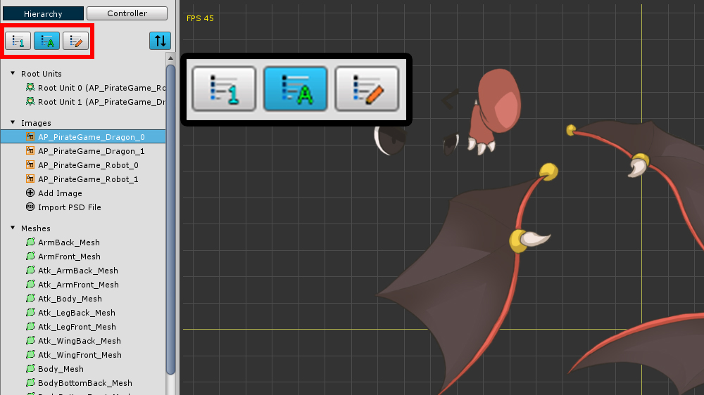
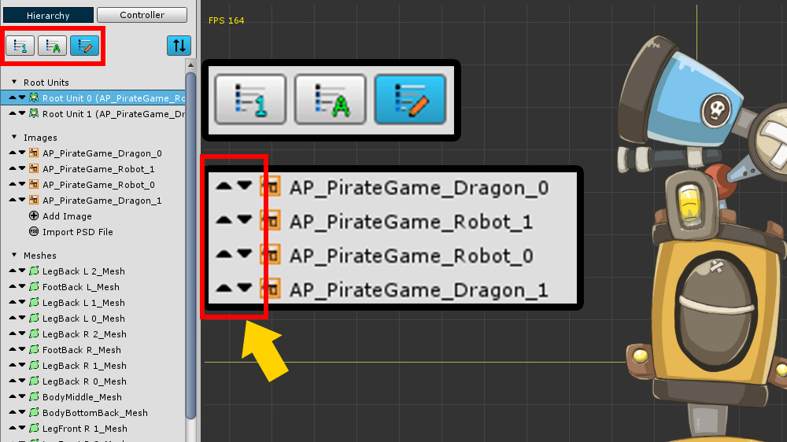
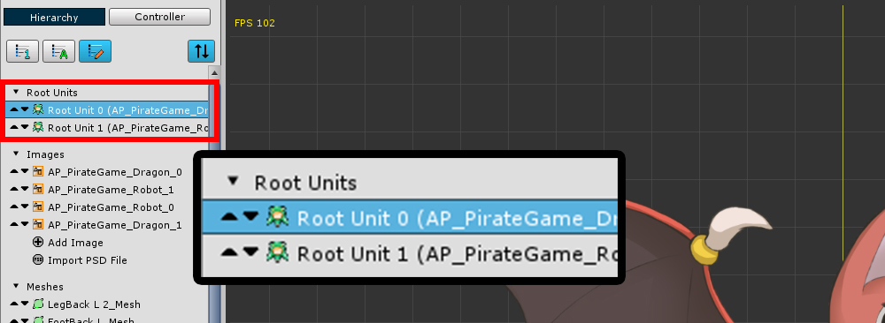
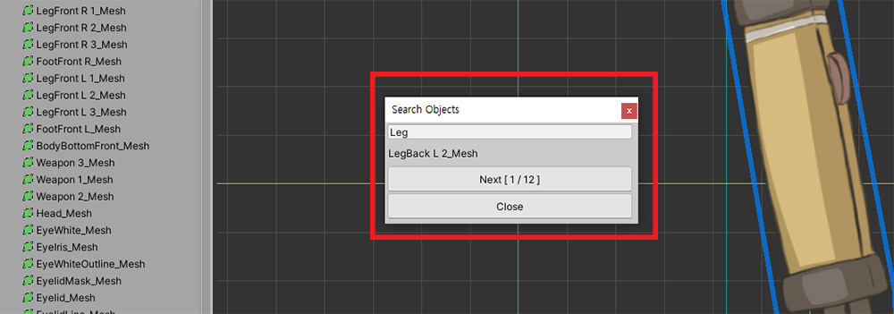
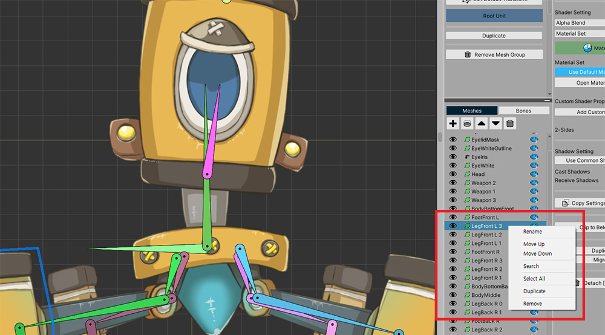
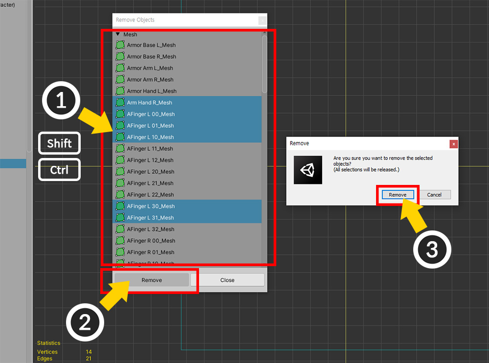
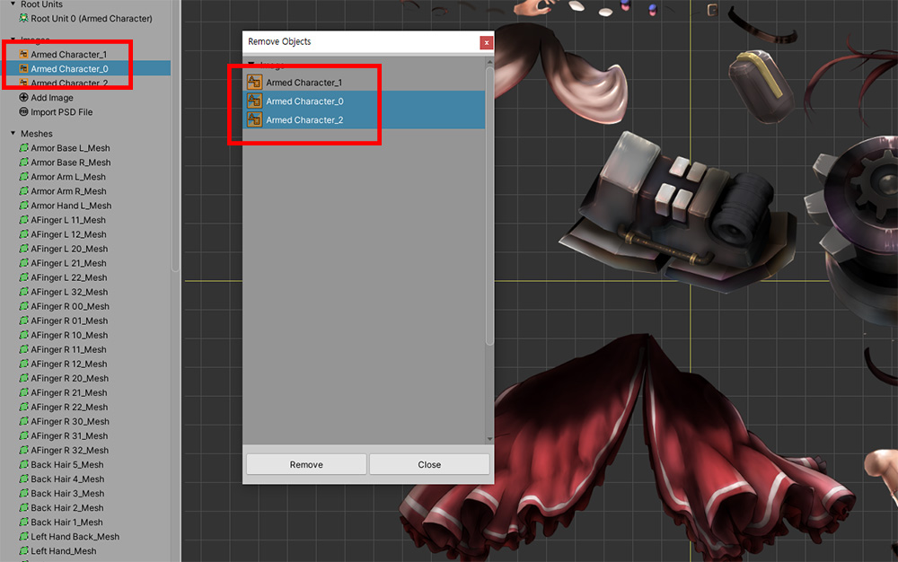
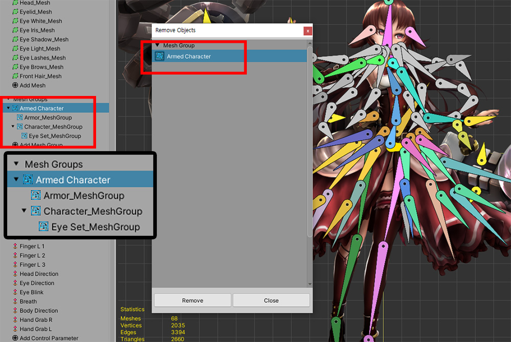
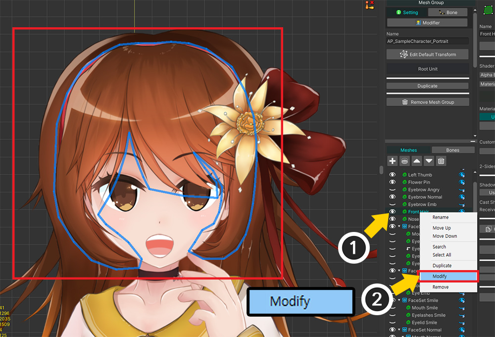

AnyPortrait > Manual > Hierarchy UI
Hierarchy UI
1.4.0

The Hierarchy UI is located on the left side of the editor.
In Hierarchy UI, you can see all the objects belonging to Portrait you are working on.

There are filter buttons at the top of the Hierarchy UI.
If there are too many objects, it is possible to hide certain kinds of objects.

You can change the order of the objects in the "Hierarchy UI".
(1) Press the Sort mode button.
When Sort mode is on, the filter buttons disappear and the sorting buttons appear.
(2) It is sorted by "Creation Order".
(3) It is sorted by "Name".
(4) It is sorted by "Custom Method".
If is is sorted by "Custom Method", the default value is the same as "Creation Order".

It is sorted by "Creation Order".

Sorted by "Name".
This method works well for English and numeric names.

It is sorted by "Custom Method".
By default, it is the same as "Creation Order", but you can change the order by pressing the button that appears on the left side of the list.

The "Custom Method" not only has the ability to change the order,
but also the ability to change the order of the Root Units.
If you change the order of the Root Units, the indexes of the Root Units are actually changed.
Right-click Menu
1.3.2

You can open the sub menu by clicking Right Click in the Hierarchy UI.
You can quickly execute some functions in the object's properties UI.
(The contents of the menu differ depending on the type of object clicked.)

If you select Rename, you can change the name of the object.

If you select Search, you can search for objects by name.
Enter a keyword and press Enter to search for objects.
You can select the searched objects sequentially by clicking the Next button.

The same menu can be invoked from the Hierarchy UI for mesh groups.
Remove multiple objects
1.3.4

Remove Multiple menu has been added to the right-click menu.
It is possible to remove multiple objects at once using this menu.

If you select the Remove Multiple menu, the above dialog box appears.
(1) Select the items you want to remove. You can select multiple items by pressing the Shift key or the Ctrl key.
(2) Press the Remove button.
(3) A warning message appears. Check that the selection is correct and click the Remove button.

In this dialog, the items displayed in the list change according to the type of the item you right-clicked.
If you right-click on an image to open a dialog box, the images appear in the list as shown above.
(The Root Unit does not appear.)

However, when you try to remove a mesh group, child mesh groups belonging to other mesh groups do not appear.
Modifying a Mesh or Child Mesh Group
1.4.0

Added a menu to the right-click menu to quickly switch to the screen to edit a mesh group's meshes or child mesh groups.
(1) In the Hierarchy of the mesh group, click Right click on the object (mesh or child mesh group) you want to edit to open the sub menu.
(2) Select Modify.

You will see that it switches directly to the edit screen for that object.